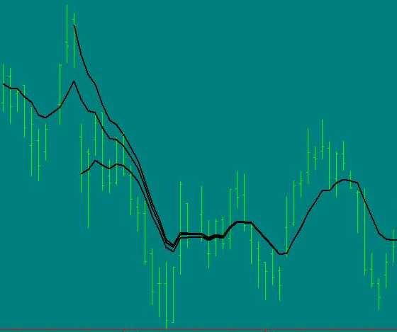

NAME
TA_SetUnstablePeriod - C Function
SYNOPSIS
#include
"ta_libc.h"
TA_RetCode TA_SetUnstablePeriod( TA_FuncUnstId id,
unsigned int unstablePeriod );
DESCRIPTION
Some functions are influenced by the whole range of the past data. These functions are sometimes called functions with memory. An example is the EMA (Exponential Moving Average) . The EMA use the previous day EMA in its algorithm. By doing so, a given point will never be "drop" and will have an influence on all the subsequent values. In contrast a simple moving average (SMA) reflects the average of a finite set of data (the average only of the requested period).
The following graphic shows three EMA, all being configured for 9 periods. The only difference is that they start their processing at different point in time. Notice that eventually they stabilize and overlap.

Your application may find undesirable this kind of data variation (particularly for "walk-forward" testing application). Any trade strategy using the first few value from this EMA may trig false signals that would not otherwise exist if more "previous" data would have been processed. TA_SetUnstablePeriod allows to strip off such initial unstable period. In other word, a TA function could be configured to return the data only at the point where its output will reasonably be always the same, regardless of the amount of past data. In the example here, setting the unstable period around the 34th price bar would be sufficient.
The general guideline is to strip off as much data as you can afford. It appears that getting rid of 100 price bars is reasonable for most TA functions.
By default, there is no unstable period for all TA functions. It is your responsibility to figure out how much data to strip off for the sake of consistency.
When an unstable period is specified, it is a global setting. It will affects also the composite functions (TA functions using other TA functions). Example: setting an unstable period for an EMA will affect also the EMA used within the MACD function.
This feature of controlling the "unstable period" is rarely provided by commercial technical analysis software... simply because most user are not aware of the issue and many products do not bother about the added complexity of providing a solution.
At this point, you probably knows enough for handling properly the issue. Some crazy people may wish to go one step further by attempting to make function with memories use a finite set of data. Making this will guarantee that a given point in the time series will ALWAYS return EXACTLY the same value. Again, this is an "advance discussion", and setting a large unstable period will be sufficient for most user, but still, here is the trick: This is achieved by calling the TA function with a startIdx equal to the endIdx. In other word, process each point of your TA function individually. By doing this, the amount of input data will be ALWAYS the same for a given point, and thus the result will be always exactly the same. In other word, an EMA function will technically end-up to use a fix amount of data (the fix initial value and then the fix unstable period) and then everything is thrown away and independently repeated for the next point in the time series.
PARAMETERS
'id'
Specify to which TA function you wish to modify the
unstable period.
Each TA function who have an algorithm
introducing "memories" will have an unique identifier. These identifier are
enumerated at the very end of the "ta-lib/c/include/ta_func.h" file in the
TA_Func. If you wish to change all applicable TA functions in one call,
specify here "TA_FUNC_UNST_ALL"
'unstablePeriod'
Specify the number of outputs that are
going to be strip off for this TA function. Could be zero if you wish that TA
function to return all the data (like most TA software does).
RETURN VALUE
| TA_SUCCESS | Operation is successful |
| TA_BAD_PARAM | Out of range parameter. |
For other error code, or to match a number to an error description, check the TA_RetCode enumeration in "ta-lib/c/include/ta_common.h"
SEE ALSO